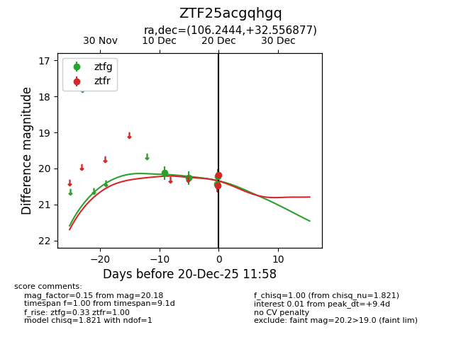
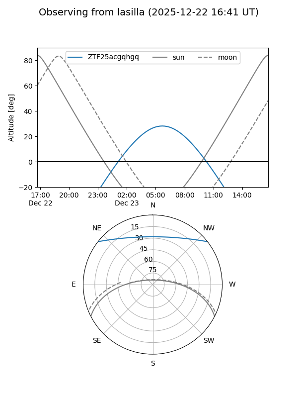
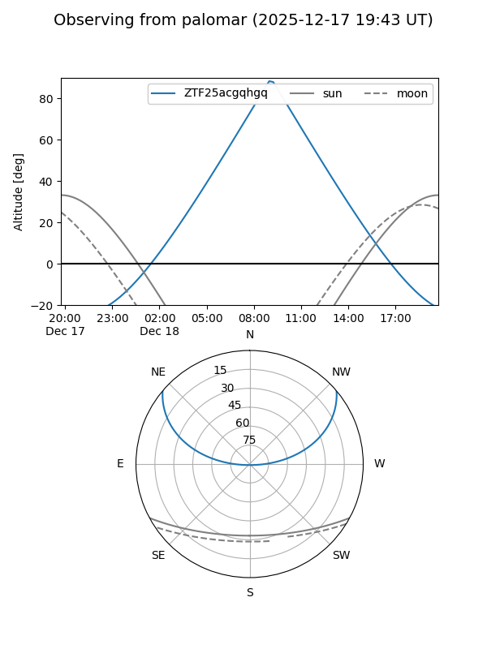
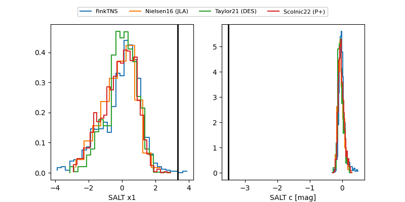

ZTF25acgqhgq
Target ZTF25acgqhgq at 2025-12-20 07:34
Aliases and brokers:
FINK: fink-portal.org/ZTF25acgqhgq
Lasair: lasair-ztf.lsst.ac.uk/objects/ZTF25acgqhgq
ALeRCE: alerce.online/object/ZTF25acgqhgq
alt names
ZTF25acgqhgq (ztf,fink_ztf)
Coordinates:
equatorial (ra, dec) = 106.2444,+32.55688
equatorial (HMS+DMS) = 07:04:58.65,+32:33:24.76
galactic (l, b) = (184.4631,+16.83830)
Flags:
Photometry:
last ztfg=20.22
4 ztfg detections
Lightcurve

Visibility


Additional plots
